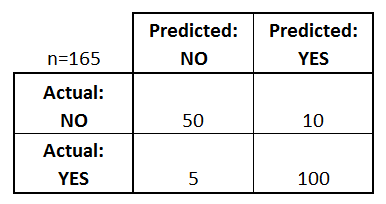
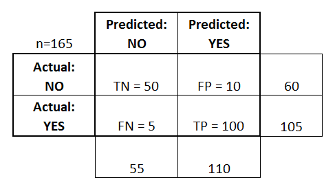

Imbalanced Dataset¶
What is Imbalanced Dataset?¶
Let’s consider a case where we have to do a classification task between two classes, say we have to classify between 2 classes: “A” & “B”, and “A” has a lot more instances than “B”. Then a very worse model can give a very good accuracy score here.
For eg: Suppose we have to classify a cancer dataset, so the people having cancer are a lot lesser than the people not having cancer. So our dataset will have a lot more instances of not having cancer as compared to having cancer. Talking in figures, let’s say we have a dataset in which class “A”(not having cancer) has 2500 instances, and class “B”(having cancer) has only 50 instances. So, even though we train a worst model that classifies everything as “A” will have a very high accuracy.
Accuracy = \(\dfrac{2500}{2550}\) = \(98.03\%\)
As we can see, a model that classifies everything as “A” also have an accuracy score of \(98.03 \%\) which is considered a very descent score for a Machine Learning Model. This problem is known as Imbalanced Dataset, and it is a very common problem among ML datasets. So let’s see what counter measures can be taken to solve this issue.
Counter Measures Possible for Imbalanced Dataset:¶
Downsampling:¶
One way of the easiest way of balancing dataset can be randomly sampling from the classes having higher instances, and make no. of instances of each class equal. This way all the classes will have equal no. of datasets, but by doing this we’ll suffer through a lot of information loss. A lot of variability among the data will be lost, so this can’t be a good approach.
Double the existing instances:¶
Another approach can be to double up the existing minority class instances, which seems to be a good option as it doesn’t include any information loss. But here also we’re just assigning doubling the weights of the existing datapoints of minor class, which will not provide us any new information. So even if we didn’t lose any information, we still didn’t got any new information.
Upscaling:¶
This is the way we generally use to resolve the imbalanced dataset issue. There can be a lot of ways of upscaling, we’ll see the SMOTE method here.
In this method, we randomly take 2 points from our minority class, and draw a line joining them, and then randomly sample any point lying on that line.
This way we can generate some new instances, and upscale our current dataset which will solve our issue.
Accuracy Metrics to counter Imbalanced Dataset¶
As we saw, our current way of calculating accuracy isn’t effective on the Imbalanced Dataset, So we can also change our way of calculating accuracy which can also solve our issue of imbalanced dataset.
We’ll look into 3 new accuracy metrics:
Precision
Recall
F1-score
For understanding these metrics, first we have to know about Confusion Matrix.
Confusion Matrix:¶
A confusion matrix is a table that is often used to describe the performance of a classification model (or “classifier”) on a set of test data for which the true values are known.
The confusion matrix shows the ways in which your classification model is confused when it makes predictions.
Let’s try to understand confusion matrix with the help of an example. Below given matrix is a confusion matrix of a diabetic data of a population:

What can we learn from this matrix?
There are two possible predicted classes: “yes” and “no”. If we were predicting the presence of a disease, for example, “yes” would mean they have the disease, and “no” would mean they don’t have the disease.
The classifier made a total of 165 predictions (e.g., 165 patients were being tested for the presence of that disease).
Out of those 165 cases, the classifier predicted “yes” 110 times, and “no” 55 times.
In reality, 105 patients in the sample have the disease, and 60 patients do not.
Let’s now define the most basic terms, which are whole numbers (not rates):
true positives (TP): These are cases in which we predicted yes (they have the disease), and they do have the disease.
true negatives (TN): We predicted no, and they don’t have the disease.
false positives (FP): We predicted yes, but they don’t actually have the disease. (Also known as a “Type I error.”)
false negatives (FN): We predicted no, but they actually do have the disease. (Also known as a “Type II error.”)
Now let’s modify this table a bit, and add some columns to know about “Total Predicted No”, “Total Predicted Yes” & “Total Actual No”, “Total Actual Yes”

And Now Precision and Recall can be measured using this confusion matrix.
Precision¶
It is the ratio of the relevant instances among the retrieved instances.
This metric is calculated for each class individually.
For Class 1 (YES):
Precision = \(\dfrac{TP}{TP + FP}\)
Precision = \(\dfrac{100}{100 + 10}\)
Precision = \(90.9\)
For Class 0 (NO):
Precision = \(\dfrac{TN}{TN + FN}\)
Precision = \(\dfrac{50}{50 + 5}\)
Precision = \(90.9\)
Recall¶
Recall is the fraction of relevant instances that were retrieved
This metric is also calculated for each class individually.
For Class 1 (YES):
Recall = \(\dfrac{TP}{TP + FN}\)
Recall = \(\dfrac{100}{100 + 5}\)
Recall = \(95.2\)
For Class 0 (NO):
Recall = \(\dfrac{TN}{TN + FP}\)
Recall = \(\dfrac{50}{50 + 10}\)
Recall = \(83.3\)
So now the Big Question comes: What should we use Precision or Recall?
And the answer to this Question is totally dependent on the task we want to perform. Suppose we are buliding an Ad-Blocker for a kids website. So if our model blocks a non-adult Ad, then it should not be a problem, but if it allows an Adult Ad on the website, then it will be an issue, as the website is made for Kids. So we should rely on a model that must block the “adult ads”, whether it misclassify and block a “non-adult ad”. So in this case, we’ll prefer a model that gives high Recall for Class 0(Non-Adult Ad).
Note:
It is always recommended to assign +ve to the minority class, means the instances of the minority class belongs to 1 rather than 0. It increases the efficiency of Precision and Recall.
F-1 Score:¶
It is a metric that is used to combine the precision and recall metrics, and give a combined accuracy. It calculates the harmonic mean of Precision & Recall.
F-1 Score = \(\dfrac{2}{\dfrac{1}{p} + \dfrac{1}{r}}\)
\(p\) ==> Precision
\(r\) ==> Recall
ROC Curve¶
This is a commonly used graph that summarizes the performance of a classifier over all possible thresholds. It is generated by plotting the True Positive Rate (y-axis) against the False Positive Rate (x-axis) as you vary the threshold for assigning observations to a given class.
Recall for class 1:
\(\dfrac{TP}{TP + FN} = \dfrac{\textrm{Total True Positive by Model}}{\textrm{Total actually Positive}}\hspace{1cm}\) #[This term is also called Senstivity]
Senstivity is called True Positive Rate.
Recall for Class 0:
\(\dfrac{TN}{TN + FP} = \dfrac{\textrm{Total True Negative by Model}}{\textrm{Total actually Negative}}\hspace{1cm}\) #[This term is also called Specificity]
(1-Specificity) is called False Positive Rate.
So ROC Curve is a plot between Senstivity v/s (1 - Specificity)
Threshold Tuning:¶
When we train a model for classification, it gives us any number between 0 & 1. And we generally say if it’s below 0.5, it belongs to class 0. Or if its above or equal to 0.5, it belongs to class 1.
So we can say, here Threshold = 0.5
But suppose we change the threshold to 0, then every instance will belong to 1. And if we change threshold to 1, then every instance will belong 0.
And if Threshold = 0, then:
Senstitvity = 1
Specificity = 0
If Threshold = 1, then:
Senstivity = 0
Specificity = 1
So what should we keep the value of threshold?
The value of best threshold can be found by looking at the Area under the ROC Curve.
AUC (Area Under Curve):¶
It is the area covered under the ROC curve. And the maximum is the value of AUC, the better will be the performance of the model.
The graph of the First model has maximum AUC, which means it is the best model among all.
Same way, AUC value of the Second model is average, making it a good model.
The AUC value of Third model is minimum, making it the worse model.